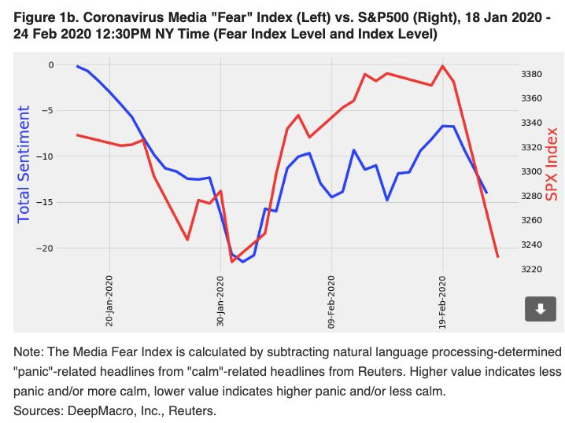

意大利确诊229例死亡7例，韩国检测“新天地”全体信众
原文链接 备份链接 意大利米兰街头。图片来源：半岛电视台 “ 全球新冠肺炎疫情播报，持续更新。 ” （本文持续更新中，点击左下角阅读原文，实时跟踪国际疫情动态。文中段首所示时间为本文更新时间。） 意大利 0800 【意大利新冠肺炎死亡病例 …

世界卫生组织官员对韩国和伊朗等地爆发新冠病毒疫情表示担忧，但表示情况尚未上升到大流行病的程度。在美欧金融市场，这一模式已变得清晰：新增确诊病例数=增加的市场恐慌=疲弱的资本市场。这一模式会否必然在中国出现，尚待观察

图/法新
文 |《财经》特派华盛顿记者 金焱
编辑 | 苏琦
全球股市被新冠病毒疫情的恐惧所笼罩。继亚洲股市一片惨跌、欧股收盘全线重挫暴跌后，美股2月24日大幅低开，道指一度跌超千点、收盘创下2年来最大单日跌幅。一个华尔街基金经理对《财经》记者形容市场的恐惧时说，当天投资人彼此发出的评论多以“我的天啊（OMG）”开头。
美国科技股在今年不到二个月的时间已经推动股市不断飙升，创下新高。另一方面，花旗集团前全球外汇主管、深数宏观（DeepMacro）联合创始人兼CEO杰弗瑞·杨（Jeffrey Young）则对《财经》记者表示，现在一个已变得清晰的模式是：新增确诊病例数=增加的市场恐慌=疲弱的资本市场，这是底线。当然新增确诊病例数指的是中国境外的新增。
随着中国确诊感染病例的减少，全球关注焦点已转移到了疫情陆续爆发的新前线。世界卫生组织官员对韩国和伊朗等地爆发新冠病毒疫情表示担忧，但表示情况尚未上升到大流行病的程度。
世卫组织总干事谭德塞表示，他们的研究小组刚刚结束了在中国的调研，并确认该流行病在1月23日至2月2日之间达到顶峰后，一直在稳步下降。
谭德塞表示，意大利、伊朗以及韩国等突然增加的病例让我们深感忧虑，很多人担心这种增长是否意味着这种疫情现在是否已经进入大流行阶段。我们决定是否使用“大流行病”一词。
谭德塞解释说，世卫组织在判断是否使用“大流行病”一词描述疫情时，要对病毒传播的地理范围、所引发疾病严重程度以及对整个社会的影响等进行持续评估。目前世卫组织并未看到新冠病毒在全球范围内“不受控制地”传播，也未看到重症病例或死亡病例大规模出现。“我们看到的是世界不同地区发生的疫情正以不同方式影响着各国，需要采取因地制宜的应对措施。”谭德塞说。
美欧股市再现“黑色星期一”
多位投资经理对《财经》记者表示，市场在2月21日就感到了疫情对全球经济的寒意，在整个周末情况越来越糟，韩国、意大利和伊朗的重镑消息直接导致了黑色星期一的到来。
深数宏观用一种新颖的大数据方式判断疫情对市场的影响。他们的分析基于路透社新闻头条中对新冠病毒疫情的语言处理——用语言的恐惧程度为指标，对比了与“冷静/平静”相关单词的数量，与“恐慌/担忧”相关单词的数量，得出对新冠病毒疫情报道恐惧程度的净得分，负值意味着更恐惧/不大镇定，正值则意味少有恐惧/更镇定。这是一种更全球而非中国情绪的指标。
结果是“恐惧”情绪在2月1日达到顶峰。尽管在2月9日和2月14日中的净恐惧增加，但这一情绪在那之后明显减少。最近几天，由于韩国，伊朗和意大利疫情暴发，恐惧指数急剧恶化，拖累了全球股市。
2月24日，韩国首尔综指收盘下跌3.9%，为2018年10月来最大单日跌幅；韩元兑美元汇率盘中一度下跌0.8%，至1218.35，为8月以来最低；泰国综合指数重挫3.98%，跌至2016年10月份水平；孟买SENSEX30指数跌1.22%；日经225指数跌1.14%；香港恒生指数跌1.79%。上证指数跌0.28%。

欧股周一收盘全线重挫，德国DAX30指数跌超4%，英国富时100指数、法国CAC40指数跌超3%，意大利富时MIB指数大跌逾5%。A50指数期货盘中跌超1%。避险情绪陡升，股市大跌，避险资产上涨的故事也在美国资本市场上演。周一美股三大股指全线收跌，道指跌超达1032点。截止收盘，道指跌3.56%，纳指跌3.71%，标普500指数跌3.35%。A50指数期货盘中跌超1%。
受疫情发展的相关消息影响，周一早间，衡量投资者恐慌程度的芝商所(Cboe)波动率指数(VIX)一度飙升约48%，上涨至23点。目前该指数上涨约34%。大宗商品市场方面，美、布两油跌近4%，截止收盘，WTI原油期货收跌1.95美元，跌幅3.65%，收报51.43美元/桶。布伦特原油期货收跌2.20美元，跌幅3.76%，收报56.30美元/桶。
多位经济学家对《财经》记者表示，疫情对美国经济的影响可能要大于预期，如果美股继续下跌，美联储的选择空间不多，只能降息。
疫情进一步全球扩散
在过去两天，个别国家确诊病例的快速增长令人咋舌，如何控制病毒在人与人之间的进一步传播已成为疫情的新担忧。意大利成为欧洲地区最大规模的新型冠状病毒疫情区，有219人对该病毒呈阳性反应，有5人死亡。随着人们担忧整个欧洲疫情加剧，意大利警方在北部十几个被隔离的城镇附近设置了检查站。
当地时间2月24日晚，世界卫生组织欧洲地区办公室发表声明称，世卫组织与欧洲疾病预防控制中心联合派出的专家组已于当天达到意大利。专家组主要将在临床管理、感染防控、疫情监测与危机沟通等方面提供支持。
意大利出现的病例中，80%没有症状或者只有轻微症状，这算是个好消息。意大利的“1号病人”来自伦巴第大区在21日凌晨确诊的意大利第四例新冠病毒确诊患者，他此前并未前往中国也没有和任何确诊患者有过密切接触。意大利媒体表示，在约半个月的时间里，他参加了一次半程马拉松比赛、一场足球赛、一次跑步比赛，并多次和朋友一起用餐。“1号病人”曾在1月21日和另外一名41岁的意大利男子一起用餐，这名41岁男子曾前往中国并在2月初出现流感症状，不过他进行新冠病毒核算检测的结果为阴性，因此意大利当局仍在努力确定可能存在的“0号病人”。
韩国总统文在寅将韩国置于红色警报即最高警报级别之中。在仅仅五天的时间内，韩国确诊病例数就增加了大约25倍。韩国中央应急处置本部副本部长金刚立24日在记者会上表示，大邱地区感染新冠病毒的确诊病例规模较大，若不能有效阻断社区传播，疫情很可能扩散至全国。
目前新冠病毒疫情正在中东扩散。伊朗已有12人死于该病毒。来自库姆的伊朗议员艾哈迈德·阿米里阿巴迪·法拉哈尼则对媒体表示，新冠肺炎疫情在库姆扩散的范围大于此前报道，目前已导致50人死亡，另有250多人隔离，这一消息不前未得到官方证实。巴林卫生部当地时间24日晚发布公告，称确诊一名巴林女性公民为新型冠状病毒确诊病例。这也是巴林境内确诊的第二名新型冠状病毒肺炎确诊病例。公告显示，该感感染者此前曾前往伊朗旅行，后与其丈夫和儿媳一起经停阿联酋迪拜后返回巴林。
科威特卫生部24日晚发布声明称，经过对伊朗返回科威特公民的医学检查，确定新增两例新型冠状病毒感染者。科威特境内的新型冠状病毒感染者数量也因此增加至五人，其中包括一名沙特公民和一名不确定国籍者。
阿富汗公共卫生部长费罗兹(Ferozuddin Feroz)2月24日表示，在靠近伊朗边界的一个西部省份赫拉特，发现了3起疑似新冠病毒病例，其中1例已经确诊。费罗兹还宣布，赫拉特省进入紧急状态。阿富汗政府已经决定暂停与伊朗之间的空中及路上交通，并停止从伊朗进口鸡肉及鸡蛋。

▲点击图片查看更多疫情报道
责编 | 黄端 duanhuang@caijing.com.cn
本文为《财经》杂志原创文章，未经授权不得转载或建立镜像。如需转载，请在文末留言申请并获取授权。
原文链接 备份链接 意大利米兰街头。图片来源：半岛电视台 “ 全球新冠肺炎疫情播报，持续更新。 ” （本文持续更新中，点击左下角阅读原文，实时跟踪国际疫情动态。文中段首所示时间为本文更新时间。） 意大利 0800 【意大利新冠肺炎死亡病例 …
原文链接 备份链接 【财新网】（记者 黄蕙昭 综合）“只要有人记得，他们就没有真正离开。”截至23日，全国已有21位医护人员在救治一线殉职，其中10位因感染新冠肺炎去世。他们当中，有充满活力的年轻人，也有兢兢业业多年的业务骨干。讣告接连发 …
原文链接 备份链接 澎湃新闻记者 刘栋 新冠肺炎疫情正在全球范围内急速发展。 刚刚过去的周末，全球多国疫情出现恶化。在东亚，韩国确诊病例增加了195%；在南欧，意大利病例增加了近50倍；伊朗和日本的病例也在快速上升，多个国家报告出现首例确 …
原文链接 备份链接 新冠肺炎疫情的发展形势，正在全球范围内急剧变化。 根据中国各省卫健委官方发布消息来看，截至 2 月 24 日上午 9 时，全国已有 23 个省（自治区、直辖市）在 23 日全天的新增确诊病例为零，其中包括北京、湖南、河 …
原文链接 备份链接 三十多天来，这座城市发生了什么，经历了什么，我们用31张照片，拼接成武汉影像日历，与大家一同铭记。 全文8976字，阅读约需16分钟 点击下图进入阅读新京报特别策划 编辑 陈婉婷 校对 吴兴发 2020年1月23日 …